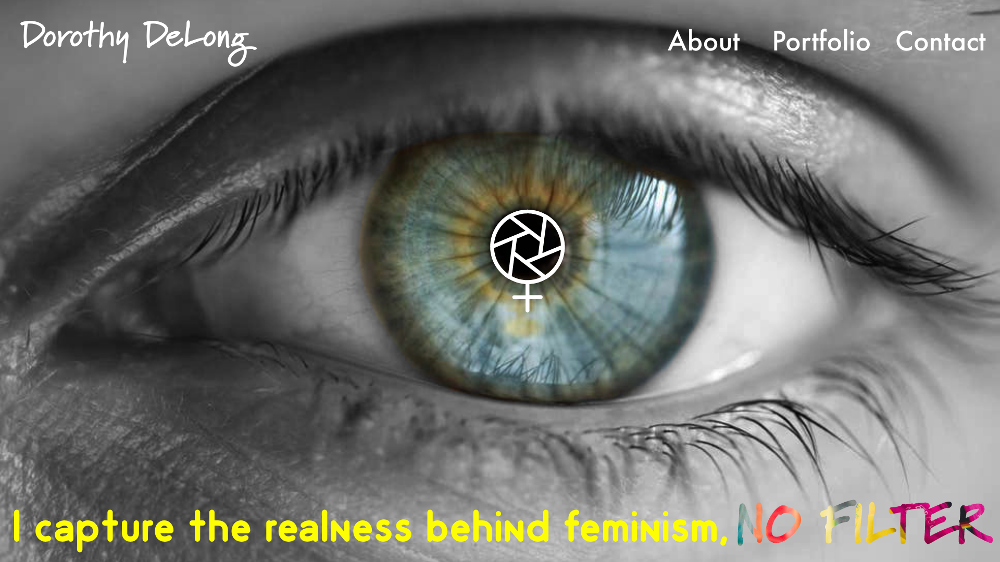
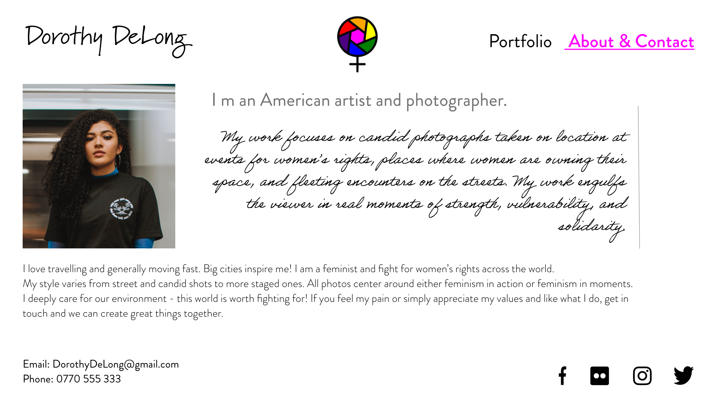

≪ BACK HOME
This design is for mobiles, tablets screens and desktops with landscape orientation. To see the prototype for mobile devices with portrait orientation please folow this link (under construction).
The above home page takes full browser window. Other pages can be accessed via the menu on top right. The portfolio page can also be accessed by clicking on the aperture of a camera/female symbol in the middle of the eye pupil. The icon expands on hover to hint the user that it's clickable. Once clicked the icon is then replaced by an image of a camera aperture opening its lenses. The size of the image must be the same as the size of the icon. The above effect takes 1 second. The Portfolio page then fades in after another second.
Portfolio Page

The Portfolio page is simple and easy the use. The header and top image together take the whole of browser window. More images are revealed on scroll. The images have their titles and descriptions in left or right bottom corner. They take full screen on click and can be closed using an x button on top right. Full screen mode also has a slider functionality where the user can use semi-transparent arows on the right and left to navigate to other images. Dorothy's contact details are found in the footer for easy access. The user can access other menu options from the menu on top right or go to the front page by clicking on Dorothy's name of logo.
About Page

Again, the idea is that this page takes the whole screen. Dorothy is brief and so is her About page. Contact details are given in the footer. Portfolio page can be accessed via the main menu on top right and the home page is accessible via the logo or the artist's name in the header.